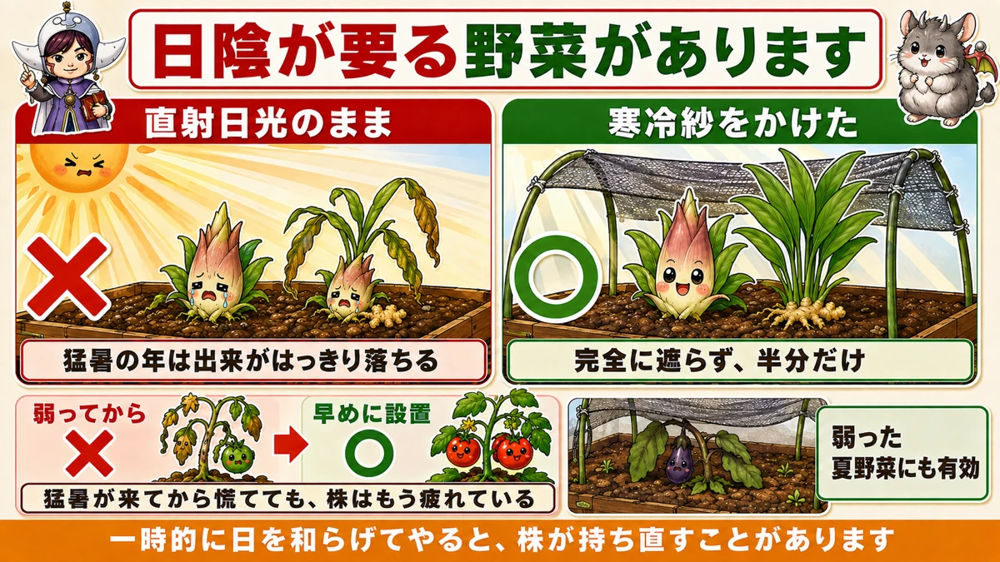

家庭菜園の猛暑対策｜水やり・日よけ・草敷きと症状の見分け方
どうも、8150（えいこう）です🌱 家庭菜園歴8年、理科の教員免許を持っていて、有機・無農薬で野菜を育てています。
📖 この記事の目次
この記事で分かること
- 猛暑への備えは『水を根の届く土へ入れる』『日差しを和らげる』『土を覆う』の3つに分けると、選びやすくなります。
- 水やりの要否は、地面の見た目だけで決めません。中の湿りと、朝の株の様子を合わせて確認します。
- 大きく育った畑の野菜には、通路へ水を入れる方法があります。植えたばかりの苗やプランターは別の管理です。
- 覆いの強さや草の厚さは、野菜の種類と育ち方に合わせます。苗床と里芋に同じ覆い方はしません。
- しおれ、実の育ちの悪さ、葉の変色は、暑さだけでなく乾燥や根の不調でも起きます。症状から調べる順番を整理します。
- 人の作業は、涼しい時間に短く。休憩の時間を守れば炎天下でも大丈夫、という考え方にはしません。
「夏野菜やから、夏には強いんちゃうの？」と思いますよね。たしかに暖かい時期に育つ野菜ですが、暑ければ暑いほどよいわけではありません。強い日差しに、雨の少なさ、夜まで続く暑さが重なると、収穫中の株にも負担が出ます。
このページは、夏の畑で『何を確かめて、次に何をするか』を選ぶための手引きです。朝に見てもしおれているなら症状の章を、まだ元気だけれど猛暑が心配なら手順の章を使ってください。
水、日陰、地面の覆いは、働く場所が違います。水を増やすだけで日差しの負担まで取り除こうとすると、土が湿りすぎることもあります。いったん役割を分けると、むやみに作業を増やさずに済むかなと思います🌱
早見：猛暑対策の目安（ひと目で分かる数字）
まず押さえる温度・時刻・量
- 高温を警戒する目安：35℃以上の気温が続く場面では、生育の乱れに注意します。35℃になった瞬間に全野菜が同じ症状になる、という境界線ではありません。
- 水やりの時間：早朝を第一候補にします。里芋では夕方を選ぶ説明もあります。朝か夕かの名前より、実際に涼しくなっているかを見てください。
- 土の確認：10〜20cmほど下の湿りを調べる例があります。根を傷つけない場所で、地表の乾きと中の乾きを比べるための目安です。毎回この深さまで掘り返す必要はありません。
- ホースの使用例：強く乾いた畑で、通路の1か所へ約10分流す例があります。水圧や面積が不明なので、どの畑でも10分流せばよいという指定ではありません。
- じょうろの水量例：ナスやきゅうりに1株約6Lという説明があります。土質、株の大きさ、与える位置が変われば必要量も変わります。リットル数と浸透の深さは一対一ではありません。
- 夏のポット育苗：朝夕の1日2回、乾き具合を確認して水を与える例があります。大きな畑の成株へ、この頻度をそのまま移しません。
- 育苗の遮光：30〜40％の覆いを使う説明と、残暑の種まきに50％を選ぶ説明があります。70％は育苗には強すぎる例として扱われています。対象と覆いの形をそろえて選びます。
数字は、作業を考える出発点です。たとえば6Lを用意しても、植え穴から外へ流れ出るだけなら、根の周りに6L入ったことにはなりません。逆に、雨で中まで湿っている土へさらに同量を入れれば、過湿へ傾く心配があります。計量したあとも土を見る、という順番にしてください。
育っている場所で、水の考え方を変える
- 畑で根が広がった株：うねの中や通路の土に水分があるかを調べます。乾きが進んでいれば、株元の一点に集中せず、根が広がる範囲を湿らせます。
- 植え付け直後の苗：まだ周囲へ十分根を伸ばしていません。苗の根鉢と、その周りの土の湿りを優先します。遠い通路だけを濡らして終えません。
- プランター：根が容器の外へ広がれないため、人が水を補う必要があります。排水と乾燥をセットで見ます。畑の『雨だけで育つ』という説明は使いません。
- 発芽待ちの種：土の表面近くにあります。大株の根をねらって深い部分だけ湿らせても、種の周りの乾燥は解決しません。
- 芽が出たばかりの苗：乾燥だけでなく強い直射日光も負担になります。水やりと光の調整を一緒に考えます。
品目ごとの見方
ナス、きゅうり、里芋、生姜は、収穫を続けるための乾燥対策を意識したい野菜です。枝豆やとうもろこしも、花が咲いたあとの水不足に気を配ります。『水を好む』とは、根がいつも水に浸かってよいという意味ではありません。
根が広がった畑のトマトなどでは、降雨と土中の水分で育つ場合があります。ただし、同じトマトでも鉢植え、定植したばかり、長く雨がない状態は別です。野菜の名前だけで水やりの有無を決めると、この条件が抜けます。
猛暑対策は、単独の野菜の栽培日程ではありません。株間、元肥の量、連作の間隔、収穫までの日数は品目で違います。このページの温度や水の目安から逆算して作らず、育てている野菜の栽培計画へ戻って確認してください。
作業の手順（暑くなる前から、夏の管理まで）
1．暑くなる前に、畑を管理の違う場所へ分ける
- 育てている野菜を『収穫中の大株』『植えた直後の苗』『種まきした場所』に分けます。
- プランターやポットは、畑の株と別の確認先にします。
- ミョウガや生姜など、強い日差しを和らげたい場所を確かめます。
- 黒マルチがむき出しの場所、土が裸の場所、すでに草で覆われた場所を見ます。
- 水場からの距離、通路の傾き、水が抜ける方向を確認します。
最初にこの分類をしておくと、朝の作業で迷いにくくなります。大株を一回見たから苗床も大丈夫、とはならないんですよね。小さなポットでは使える水が限られているので、畑の土が湿っていても、苗だけ先に乾くことがあります。
水を通路へ流す予定なら、隣のうねや区画へ流れていかないかも見てください。大量に水を使う方法は、使える水と排水があって成り立ちます。共同の畑では利用の決まりも確認し、ホースを置いたまま離れないようにします。
2．朝の葉と、土の中を組み合わせて調べる
- 日差しが強くなる前に、株全体と新しい葉の張りを見ます。
- 通路やうねの端など、太い根を切らずに確認できる場所で土の表面を少しよけます。
- 中の土の色と湿りを調べ、指先で触れた感じを確かめます。
- 土を軽く握り、まとまるか、ぱらっと崩れるかを比べます。
- 確認した土を戻し、その日の水やりの要否を決めます。
同じ土なら、乾いたときと湿ったときの色の違いが手掛かりになります。別の畑の『黒いから湿っている』を、そのまま自分の畑へ当てはめないでください。もともとの土の色が違うからです。
握った土のまとまり方も、砂の多い土と粘りのある土で変わります。団子にならなかったら必ず水不足、とするより、同じ場所で雨のあとと乾いた日を見比べると分かりやすいです。実物で違いが見えると、土を触る作業もなんか面白くなります☺️
株元は湿っているのに、通路側だけ乾いている場合もあります。大株の水を考えるときは植え穴だけで終えず、周りの土へ確認範囲を広げます。ただ、根を確かめようとして毎回深く掘るのは逆効果。根を探し出すためではなく、土の湿りを知るための確認です。
3．畑の大株には、広がった根へ水を届ける
- 土の中まで乾いていることを確認します。
- ホース内に残った水の温度を確かめます。熱ければ、植物に当てずに水を出して温度が落ち着くのを待ちます。
- うねの間の通路へ水を入れます。葉へ上からかけて見た目だけを濡らす方法とは分けます。
- 表面を流れて逃げるときは、一度止めて、しみ込む様子を見ます。
- 片側だけでなく反対側の通路も確認し、必要な範囲へ行き渡らせます。
- 水がしみ込んだあと、根を傷つけない場所で土中の湿りを確認します。
通路へ与えるのは、植え穴から遠い場所にも根が広がっている株を想定した方法です。『根のある土を湿らせる』と考えると、場所を選ぶ理由がつながります。小さい苗にまで『通路だけ』を共通ルールにしないでください。
量の目安にホース約10分という例はありますが、蛇口をどこまで開くかで水量は変わります。平らな通路と傾斜のある通路でも、水の残り方が違います。時間だけを合わせるより、流出していないか、地中へ入ったかを見ます。
地表に一時的に水がある状態と、長く水が引かない状態は違います。乾いた土へ十分与えるつもりでも、ずっと水が残るなら排水の問題を考えます。『たっぷり』を『たまり続けるまで』に置き換えないようにしてください。
じょうろやバケツでも、水を広い範囲へ入れることはできます。水場が遠いと一度に運ぶ量に限界があるので、まずどこが乾いているかを絞ります。重い水を何度も運ぶ前に、地面の覆いで蒸発を減らせないかも考えると、作業の負担を減らせます。
4．植えた苗とプランターは、近くの根を優先する
- 定植直後なら、根鉢と植え穴周辺の乾きを確認します。
- 周囲の土へ水を与え、苗の近くが湿るようにします。
- 翌日以降も苗の葉の張りを見て、根付くまで確認を続けます。
- プランターでは土の乾きと底からの排水を調べます。
- 容器内へ水を行き渡らせ、受け皿などに水が残り続ける状態を避けます。
苗を植えるときは、乾いた穴へ水を入れ、しみ込むのを待ってから植える方法があります。植え終えたあとも、その苗の近くを確認します。雨が十分降れば人が水を足す必要は減りますが、雨予報があるだけで、いま根鉢が乾いていてよいわけではありません。
根が伸び始めたかを見るには、毎回苗を引っ張って確かめるより、新しい葉の伸びや朝の様子を見ます。植えた日のまましおれが続いているなら、通路を濡らした量より、苗の近くまで水が届いたかを先に見直してください。
プランターは外の地面へ根を伸ばせません。畑のトマトが水やりなしで育った説明を読んでも、容器のトマトを同じように放置しないこと。朝に確認し、夕方までに乾きやすい環境なら、その時間の様子も見る必要があります。
5．日差しを和らげる覆いは、弱る前に用意する
- ミョウガ、生姜、幼苗など、光を調整したい対象を決めます。
- 寒冷紗などの遮光用の覆いについて、表示された遮光率を確認します。
- 支柱で覆いを支え、葉へ押しつけず、風が通る空間を作ります。
- 強い日差しが入る時間帯と方向を見て、覆う場所を合わせます。
- 設置後に、葉の張り、苗の伸び、土の乾き方を見直します。

半日陰を好む野菜には、強い日差しを和らげる備えを早めに進めます。傷んだあとで覆いを張っても、失った葉がすぐ戻るわけではありません。天気予報で暑さが続きそうなら、まだ元気なうちに準備するほうが段取りを組みやすいです。
日差しを好む夏野菜でも、弱っているときに一時的な遮光を使う道があります。ただし、すべての株を同じ強さで長期間覆う方法にはしません。光は野菜が育つためにも必要なので、覆ったあとの変化を見て調整します。
防虫用のネットと日よけの覆いは、見た目が似ていても目的が異なります。虫を防ぐには網目やすき間、暑さを和らげるには遮光や風通しを見る必要があります。『ネットを張った』だけで両方の対策が済んだと考えないでください。
6．地面を覆い、熱と乾燥を抑える
- わらや刈った草を用意します。草は種の付いていないものを選びます。
- 土が乾き切っているなら、先に必要な水を与えてしみ込ませます。
- 黒マルチが張ってある場所は、その上に草やわらを広げます。
- 土がむき出しの場所は、地表が直接日を受ける範囲を覆います。
- 野菜の芽や中心を埋めず、水やりと観察ができる場所を残します。
- 覆いが薄くなったら足し、下の湿りと株の様子を確かめます。
黒マルチは春の保温や水分保持に役立ちますが、夏には表面や土が熱くなりすぎる場面があります。すでに張ってあるものをすべて剥がす前に、上へ草を置いて直射を和らげる方法があります。
草を敷く作業と、肥料を与える作業は別です。ここでは地面の覆いとして使い、その場で栄養を補えるものとは扱いません。葉色が薄いから草を敷けば肥料まで解決する、という話にしないでください。
草を活用するなら、根ごと抜いたものが再び根付く心配や、種を持ち込む心配も考えます。刈って敷く方法は、草取りで出たものを使える利点があります。ただし、どんな草でも何でも山積みにしてよいわけではありません。使う場所を観察できる量にします。
里芋では梅雨明け後に覆いを足す説明があります。一方、芽が小さいにんじんや、これから土寄せする場所では、厚い草が作業や生育の妨げになり得ます。土を覆う利点と、今後その場所で行う作業を一緒に考えてください。
7．夏の苗床は、発芽の前後で覆いを変える
- 種をまいた部分の土を湿らせ、乾燥を防ぐ薄いわらをかけます。
- 水を強く落として種を流さないよう、穏やかに与えます。
- 覆いの下を確認し、種の周りが乾いていれば水を補います。
- 芽が出たら、上にかけたわらを取り除きます。
- 必要な日よけと虫対策を続け、新しい葉が伸びる様子を見ます。
発芽待ちの種は、成株の根よりずっと地表に近いところにあります。大きな野菜で『表面は乾いていてもよい』と読むと、種にも当てはめたくなりますが、ここは分けてください。種の周りが乾くと、発芽を進める条件を失います。
芽が出たあとも厚いわらを残すと、伸びる場所や光を妨げることがあります。日よけを残したいなら、地面に載せたわらと、上から日差しを和らげる覆いを別に扱います。保湿のためにかけたものが、そのままずっと必要とは限らないんですよね。
8．収穫期は、実を大きくしすぎない選択もする
- ナスなどの実の育ちを見て、硬さや色の変化を確認します。
- 株が弱っているなら、食べられる段階でやや小ぶりに収穫する選択をします。
- 傷んだ葉と元気な葉を見分け、葉を一度に大量に取りません。
- 秋の収穫へ切り替えたい場合は、その品目の更新管理を別に確認します。
大きな実はうれしいですが、株につけている間は育て続ける負担があります。暑い時期には、最大の大きさまで待つことより、株の状態を見て収穫を続ける考え方が使えます。
ナスの更新剪定は、収穫を一度休み、その後の新しい生育を目指す方法です。しばらく実を取れない期間が生まれるので、水やりのついでに何となく切る作業にはしません。弱った株を見たら全部同じように根と枝を切ればよい、とも考えないでください。
9．畑へ行く前に、自分の作業を減らす
- 予報と暑さ指数を確認し、涼しい時間でも作業を見送る必要がないか判断します。
- 前夜に休息を取り、当日に行う作業を絞ります。
- 飲み物と涼しい休憩場所を用意します。
- 収穫、苗の水分確認など、先延ばししにくい作業から短く進めます。
- こまめに休み、暑さや体調に応じて切り上げます。
作業時間が短い日は、うね全部を完璧に整える予定を持ち込まないほうが続けやすいです。たとえば『苗の確認をして、食べ頃の実を取る』で終える日があっても大丈夫。草敷きなどの準備は、比較的涼しく作業できる日に進めます。
暑さ指数は、気温だけでなく湿度や周囲から受ける熱なども考える指標です。休憩や作業中止は現地の暑さに合わせます。45分働いて15分休むという一例を、安全な作業時間の保証にはしません。環境省の熱中症予防情報でも、暑さに応じた作業の中止や、こまめな休憩が示されています。
具体的な作業時間の例を、その時間まで頑張る目標にしないでください。暑さに慣れることと、猛暑の中で我慢することも別です。野菜の管理計画に『今日は畑へ出ない』を入れることも、自分を守る管理の一つです。
失敗の見分け方（症状→原因→やること）
昼だけ葉が垂れ、涼しくなると戻る
- 症状：日差しの強い時間に葉が下がりますが、夕方や翌朝には張りが戻ります。
- 考えられる原因：葉から出ていく水に対し、一時的に根からの吸収が追いついていない可能性があります。土中の水不足とは限りません。
- やること：朝の株と土中の湿りを確認します。中が湿っていれば水の追加を急がず、日差しの負担や地面の熱を和らげる方法を考えます。
葉を見た瞬間にホースを持ちたくなりますが、まず『いつ垂れているか』です。昼の一枚の写真だけでは、回復するしおれと続くしおれを見分けられません。前日の夕方、今朝、昼の変化をつなげて見てください。
だからといって、昼のしおれをすべて放っておけばよいわけではありません。翌朝にも残る、毎日程度が強くなる、葉や実に別の異変が加わるなら、次の症状として調べます。
朝になっても株全体がしおれている
- 症状：涼しい時間にも葉が垂れたままで、新しい葉にも張りがありません。
- 考えられる原因：深い部分までの乾燥、根の傷み、過湿による根の働きの低下、病気などが候補です。
- やること：先に土を確認します。乾いていれば根の届く範囲へ水を入れ、湿っているなら追加の水を止めて排水と株の状態を調べます。
しおれは水不足の合図になることがありますが、水が余って根が弱っていても似た見た目になります。対応が逆なので、ここは土を見ずに決めないでください。水をやった日付だけでなく、その後も水が残っているかを確認します。
同じうねの隣の株は元気か、一株だけ急に変わったかも手掛かりです。一株だけだから必ず病気、全株だから必ず猛暑、と確定はできません。ただ、畑全体へ同じ処置をする前に範囲を確かめる意味があります。
土が十分湿っているのに、朝のしおれが続く場合は、暑さ対策だけで解決しようとしないでください。株全体、葉裏、茎の付け根、周囲の排水を調べ、必要なら品目別の病気や害虫の確認へ進みます。見た目だけで病名を決め、畑の全株へ薬剤を使うところまで飛ばないようにします。
水をやったのに、すぐ同じ状態に戻る
- 症状：地表は濡れたように見えたのに、少し経つと乾き、株の様子も変わりません。
- 考えられる原因：水が表面だけにとどまった、傾斜に沿って流れた、植え穴の外へ逃げた、根の広がる場所を外している可能性があります。
- やること：水を与えた場所の中を確認します。流れ出る場合はいったん止め、しみ込みを待ちながら与える位置と範囲を変えます。
この場合、まず見直すのは回数より『届いたか』です。表面へ薄く撒く作業を増やしても、中が乾いたままなら問題が残ります。足元は濡れているのに野菜が使える水は増えていない、ということがあるんですよね。
黒マルチの小さな穴へ一気に入れると、土へ入るより先に外へ流れる場合があります。大株なら通路やうねの端へ広げる方法を検討します。植えたばかりなら、苗の周りへゆっくりしみ込ませる管理へ戻ってください。
土が湿ったままで、葉の張りが悪い
- 症状：水を与える前から土が湿り、通路にも水が残りやすいのに、株は元気になりません。
- 考えられる原因：水が抜けにくく、根が十分働けていない可能性があります。根の不調と病気の見分けも必要です。
- やること：乾燥対策のつもりで水を足し続けず、水の逃げ道を確認します。株元を毎回濡らす方法と、厚い覆いの下の状態を見直します。
水好きの里芋やきゅうりでも、過湿を無視してよいわけではありません。雨のあとなら、普段と同じ日程の水やりを一旦止め、土の実物へ戻ります。乾燥に困った週の管理を、雨の続く週にも続けないことです。
排水を直そうとして、根の近くを深く掘り、弱った株の根をさらに切らないようにしてください。水がどこから来てどこに残るかを確かめ、作業する場所を選びます。
花はあるのに実が育たず、ナスの色や硬さも変わる
- 症状：小さな実のまま成長が止まる、実の色が薄い、実が硬い、株全体の葉色も薄い、といった変化があります。
- 考えられる原因：高温による受粉や生育の不調、水不足、根の働きの低下などが考えられます。見た目だけでは一つに絞れません。
- やること：土の湿り、日差し、夜も暑い日が続いたかを確認します。水と地面の覆いを調整し、必要に応じて一時的な遮光や早めの収穫を選びます。
実がつかないと『肥料が足りないんかな』と思いがちですが、土が乾いていたり根が弱っていたりすれば、追肥だけを増やしても原因が残ります。暑さ、土の水分、株の状態を見てから、品目の追肥計画と照らし合わせます。
花が落ちたことから、その花粉が全部死んだとまでは判断できません。受粉の不調と実の肥大の不調も分けます。花が実へ進まないのか、小さな実はできていて、その後止まるのか。観察する段階を一つ細かくすると、次に調べる内容を絞れます。
苗床の芽が出ない、出てもすぐ枯れる
- 症状：種まき後に芽がそろわない、出たばかりの芽が倒れる、芽の周りの土がすぐ乾きます。
- 考えられる原因：種の位置の乾燥、直射日光と高温、強い水で種が流れたこと、虫による食害などが候補です。
- やること：覆いの下の湿り、種まき部のくぼみや流れた跡、芽の欠けを調べます。穏やかな水やりと遮光を調整し、発芽した部分のわらを取り除きます。
夏に種をまくにんじんでは、地表近くが乾くことが難しさになります。成株の水管理を真似して、朝夕の確認を省かないでください。逆に、水だけ増やして日差しの対策を省いても、出た芽が負担を受ける場合があります。
原因を見ずに『種が悪かった』と決める前に、同じ場所の土がいつ乾くかを確かめます。発芽待ちの場所と、芽が出た場所では覆いの扱いを変えられるよう、いっぺんに全部を厚く覆わないほうが観察しやすいです。
日よけを張ったあとの苗の伸びが弱い
- 症状：覆いを張ってから苗が細長く伸びる、葉の育ちが思わしくない、光がほとんど入っていません。
- 考えられる原因：遮りすぎや風通しの悪さが候補です。土の過湿や苗そのものの不調も確認します。
- やること：覆いの表示と設置方法を見直します。目的を『暗くする』から『強い日差しを和らげる』へ戻し、土の水分も確認します。
しおれが減ったから覆いが強いほどよい、と進めないでください。葉を作り、根を伸ばすためには光も要ります。元気な新しい葉が出ているかまで見ると、日よけを設置したこと自体をゴールにせずに済みます。
説明が分かれていること
畑の水は少なくてよいのか、毎日必要なのか
『Aという説明』は、根が広がり、マルチの下や周囲の土に水分が残っていれば、人の水やりは少なくてよいという考え方です。降雨があり、土中の水を使える成株を想定しています。
『Bという説明』は、ナス、きゅうり、里芋などで土が乾いたら十分補う、容器や夏の育苗では日々確認するという考え方です。雨が少ない時期や、使える土の量が小さい場合が含まれます。
『どう考えればよいか』は、頻度の言葉を選ぶ前に、場所と根の段階をそろえることです。畑か容器か、根付く前か大株か、雨が降ったか、覆いがあるか。この条件を外して『毎日』と『不要』だけを並べると、両方を同時に守ろうとして迷います。
里芋にも、被覆と降雨があれば週1回以下で足りる説明と、雨が降らないときは通路へ十分与える説明があります。間を取って必ず週2回、とはしません。中の土が湿っているなら追加を待ち、乾いていればその場所の水を補います。
一度に多く与えるのか、止めながら与えるのか
『Aという説明』は、少量で地表だけを濡らすのではなく、一回の管理で根のある範囲を十分湿らせる方法です。
『Bという説明』は、乾いた土で水が外へ逃げるなら、水やりを中断して浸透を待つ方法です。
『どう考えればよいか』は、『一回に必要な量』と『その水を入れる速さ』を分けます。途中で止めることは、少量の表面散水を毎日続けることとは違います。与えた水が土へ入るなら続け、逃げていくなら速さを落とす。この観察なら、説明を無理に一つへ丸めず使えます。
水量にも、1株約6Lという説明と、約2Lの浸透実演があります。別の説明では3Lという数字と、6Lのじょうろの3分の1という数字が同じ資料にあり、数値が一致していません。2〜3Lなら共通基準として正しい、と整理しないでください。大株の全面へ与える量と、乾いた土への実演も同じ条件ではありません。
水やりは朝か、夕方か
『Aという説明』は、日中に水が温まりやすく蒸発も進むため、早朝を選ぶ方法です。
『Bという説明』は、里芋などで夕方を選ぶ方法、朝か夕の涼しい時間を使う方法です。
『どう考えればよいか』は、時計だけでなく、その場所の暑さを確認することです。夕方でも土や周囲が熱い地域では、夕方という呼び名だけで条件を満たせません。早朝を第一候補にしつつ、実際に管理できる時間と土の乾き方を合わせます。
ただし、夕方まで待つという予定のために、乾き切った小さな苗を見過ごさないでください。暑い時間に無理な畑作業をするという意味ではなく、乾きにくい置き場所や覆いの準備を先に考える必要がある、ということです。
葉へ水をかけてよいのか
『Aという説明』は、葉へ上から撒くと根のある土へ届きにくいとして、土への水やりを優先します。
『Bという説明』は、涼しい時間帯なら葉全体へかける方法も認め、暑い日中の花や蕾への散水は避けます。
『どう考えればよいか』は、まず目的を決めることです。根へ水を補う目的なら、葉が濡れたかより土が湿ったかを確認します。葉への散水を、土への十分な給水の代わりにはしません。
水滴のレンズ効果で必ず葉が焼ける、という説明もありますが、今回の材料だけではその仕組みの検証ができません。その断定を理由にあらゆる時間帯の散水を禁止するより、熱いホース水を当てないこと、根へ水を届けることを先に守ります。
育苗の遮光率は30〜40％か、50％か
『Aという説明』は、夏の苗床に30〜40％程度を使い、70％のような強い遮光は避ける考え方です。
『Bという説明』は、残暑の種まきに50％を使い、粗い網目から落ちる雨滴の影響にも注意する考え方です。
『どう考えればよいか』は、率だけで同じ資材と判断しないことです。網目や張り方、対象の生育段階が違います。60％の覆いで雨滴の被害があった例も、60という数字だけが原因と確定した比較ではありません。
ミョウガや生姜に半日陰を作る話は、苗床の遮光率の指定とも別です。『半分くらいの光だから全野菜50％』と計算しないでください。表示を確認し、設置後の葉と土を見て調整します。
敷く草は乾かすのか、そのまま使うのか
『Aという説明』は、生姜の管理で枯れた草を使う方法です。
『Bという説明』は、里芋の夏の管理や黒マルチの上なら、その時期の刈った草は乾くため、完全に乾かしてから使わなくてもよいという方法です。
『どう考えればよいか』は、作物、草の状態、敷く位置を残して使うことです。生姜の方法を選ぶなら枯れた草で進め、里芋の条件を他の苗床へ広げません。種の付いた草を持ち込まないことも、乾いているかとは別の確認です。
黒マルチを残すのか、外すのか
『Aという説明』は、すでに張ってある黒マルチの上へ草やわらを追加する方法です。
『Bという説明』は、里芋の開口部を広げる、土寄せや生姜の管理に合わせてマルチを開く・剥がす方法です。
『どう考えればよいか』は、温度への対策と今後の作業を合わせることです。上から覆うだけなら既存のうねへ手を入れやすいですが、株の広がりや土寄せのために開く必要がある場合もあります。外せば土が直接乾きやすくなるため、外す作業で終えず、その後の覆いも考えます。
高いうねについても、乾きやすいという説明と、マルチ内には水が残りやすいという説明があります。高さだけを変えた比較ではないので、どちらかを法則にしません。土質、雨、覆い、根の広がりと一緒に、実際の中の湿りを確かめてください。
よくある質問
猛暑なら毎日水やりをしたほうがよいですか
毎日確認することと、毎日必ず水を入れることは分けます。畑の大株は中の土が湿っていれば追加を待てます。プランター、苗床、乾きやすい野菜は別に確認し、乾燥に応じて補います。
地面が白く乾いていたら、すぐ水をやりますか
地表だけでは決めません。中の土が湿っていて、朝の株に張りがあれば、地表の乾きだけを理由に追加しないでください。種まきした場所は地表近くの湿りが必要なので、成株とは判断を変えます。
苗を植えた日から、通路へ水を流せばよいですか
苗の根はまだ近くにあります。根鉢と周りの土を湿らせることを優先します。遠い通路だけを濡らしても、苗の近くまで届いたとは限りません。根付いたあとに、広がりに合わせて場所を変えます。
1株6Lなら失敗しませんか
6Lは一つの説明にある目安で、安全や成功を保証する量ではありません。土の湿り、根の広がり、流出、排水で結果が変わります。計った量を守るだけでなく、地中へ入ったかを確認してください。
少しずつ水を与えるのは、全部だめですか
一回の作業中に止めながらしみ込ませる方法は使えます。問題にしたいのは、毎回地表だけを薄く濡らして、根の周りが乾いたままになることです。量と、入れる速さを分けて見てください。
寒冷紗と防虫ネットは同じものですか
目的が違います。日よけには遮光率と設置後の光、虫対策には網目とすき間を確認します。兼ねられる形のものもありますが、名前や見た目だけで両方の働きがあるとは判断しません。
黒マルチは夏になったら全部外しますか
全部を一律に外す必要はありません。上へ草やわらを広げる方法があります。里芋や生姜などで株の広がりや土寄せに合わせて開く場合は、開いたあとの乾燥対策も組み合わせます。
わらが手に入らなければ、草で代用できますか
刈った草を地面の覆いへ使う方法があります。種の付いていないものを選び、作物と敷く位置に合う状態で使います。生姜では枯れた草を使う説明があるので、すべて生の草で統一しません。
苗床にも厚く草を敷いてよいですか
大株の里芋と同じ厚さにはしません。発芽待ちの場所のわらは薄くし、芽が出たら取り除く方法です。上から光を和らげる覆いと、種の上の覆いを別々に考えます。
草を敷けば、病気も防げますか
泥はねを減らす働きは期待できますが、すべての病気を防ぐものではありません。病気によって広がり方が違うので、草敷きだけを対策にしません。湿った土で続くしおれなどは、別に原因を調べます。
弱った株には、すぐ追肥をしますか
先に乾燥、過湿、暑さ、根の不調を確認します。肥料を追加しても、日差しや地温は下がりません。その品目の生育段階と、それまでに入れた肥料を見て、追肥が必要かを判断してください。
夏のナスは大きくなるまで待つべきですか
株が弱っているなら、小ぶりで収穫して負担を減らす選択があります。いつもより大きく育てることだけを目標にせず、実の硬さや色、株の状態を見て決めます。秋へ向けた更新管理は別の段取りです。
雨予報があるなら、水やりは省いてよいですか
土にまだ水分がある成株なら、予報を見て待つ判断ができます。乾き切ったポットや植えた直後の苗まで一律に待たせません。降ったあとも、根の近くまでしみ込んだかを確認します。
週末しか畑へ行けない場合、何から準備しますか
水やり回数を決める前に、土の覆いと、日差しを和らげたい場所を整えます。苗床や小さなポットは日々の確認が要るため、確認できる場所で育てる予定にします。一度の大量の水で一週間を必ず埋め合わせられるとは考えません。
学ぶ：野菜と土の暑さのしくみ🔬
葉から出る水と、根から入る水の釣り合い
植物は根から水を取り込み、葉などから水蒸気として外へ出しています。この水が出る働きを『蒸散』といいます。葉から水が失われる量と、根から入る量の釣り合いが崩れると、葉に張りを保ちにくくなります。
暑いときのしおれを考えるには、土の水だけでなく、この出入りを見る必要があります。中に水分が残っていても、強い日差しの中で出ていく水へ吸収が追いつかない場合があります。そこで水の追加だけではなく、日差しを和らげる手が出てきます。
朝に戻るかを見る理由もここにつながります。昼の負担が和らいだときに、葉の張りが回復するかを見たいからです。土を見ることと葉を見ることは、別々の観察に見えて、同じ水の流れを違う側から確かめています。
土の水があることと、根が使えることは別
土には、水や空気の入る小さなすき間があります。根は水だけを必要としているわけではなく、呼吸のための酸素も必要です。水が残り続けて根の働きが悪くなると、土は湿っていても株がしおれることがあります。
『しおれたから水を足す』だけでは、乾燥の場合と過湿の場合を区別できません。土が乾いていれば補い、湿ったままなら排水や根の不調を調べる。この逆向きの対応を選ぶために、先に土を触ります。
肥料の成分が土にあることと、根が取り込めることも同じではありません。根の周りの条件が崩れているとき、葉色だけを見て肥料を増やしても、吸収を妨げている原因は残ります。土の条件を確認してから追肥を考える理由です。
大きな株の水を、植え穴だけに入れない理由
苗のときに小さかった根は、株が育つにつれて周囲へ広がります。うねの端や通路側にも伸びていれば、水を使う場所は植え付け時の小さな穴だけではありません。
水を入れた一点が濡れれば、根全体が使える水も増えたとは限らないんですよね。広がった場所の土が乾いていれば、そこへ届く与え方を考えます。通路への水やりは、この根の広がりに合わせる方法です。
ただし、『根は先端でしか水を吸わない』とは書きません。根の広がりを考えることと、吸水する部分を一か所だけに限定することは別です。ここで持ち帰りたいのは、見えている株元より外側にも根がある、という見方です。
地面の覆いは、水を作るものではない
わらや草で覆うと、土へ直接当たる日差しを減らし、土から水が失われるのを抑えられます。黒マルチの上なら、黒い面が直接日を受ける範囲を減らすために使います。
覆いは新しい水を作り出してはいません。下の土が乾いたままなら、覆いを足しても水の不足は残ります。『先に湿りを確かめ、必要なら水を補い、その後の乾燥を覆いで抑える』という順番になります。
草が減ったり薄くなったりすれば、土の露出も増えます。一度敷いて終わりにせず、下の湿りと表面の状態を見る理由はそこにあります。何cmの厚さなら必ず同じ温度になる、と決められるものではありません。
黒マルチの下が何℃上がるかも、日射、風、土の湿り、測る深さなどで変わります。気温に固定の数字を足して地温を求めず、地面の熱と株の様子を別に確認してください。
光を減らすことには、助けと負担の両方がある
葉は光を使って、育つための糖などを作ります。強い日差しを和らげることは、暑い場面で株を助ける手になりますが、光をほとんどなくせば、育つための働きにも影響します。
遮光率を選ぶときに、数字が大きいほどよいとしない理由です。しおれが軽くなったかに加え、新しい葉が育っているか、苗が細長く伸びていないかも見ます。守ることと育てることの両方を、葉の変化から確かめます。
『半日陰』は場所の光の当たり方を表す言葉です。『遮光率50％』は資材の光を遮る割合の表示です。日が当たる時間、方向、覆い方まで同じにはならないので、言葉をそのまま計算で結びつけないようにしてください。
夜まで暑いと、株の負担が続く
植物は昼も夜も呼吸をしています。呼吸では、葉で作った糖などを使って、生きるために必要なエネルギーを取り出します。昼に光を受けることだけで、株の状態が決まるわけではありません。
夜も暑い状況では、この消耗が大きくなり、昼の暑さと合わせて株が疲れる要因になります。ただし、糖が夜に全部なくなる、一定の夜温なら必ず衰弱する、と単純にはしません。品目と株の状態でも変わります。
日中の最高気温だけでなく、夜の暑さも続いていなかったかを見ると、昨日まで元気だった株が弱り始めた背景を考えやすくなります。水を適切に与えているのに調子が戻らないときも、すぐ肥料の不足へ決めつけないでください。
理科の言葉を全部覚える必要はありません。朝の葉、覆いの下の土、水がしみ込む様子。この3つを見比べるだけでも、目に見えない水の動きが少し想像できるようになります🔬
まとめ
夏の管理は、『根が使える水』『強すぎない日差し』『熱と乾燥を抑える地面の覆い』を別々に確認すると整理できます。一つの作業で全部を解決しようとせず、いま足りない条件を補います。
朝の畑では、次の順で見てください。
- 自分が作業できる暑さと体調かを確かめます。
- 大株、定植直後の苗、容器、苗床を分けて見ます。
- 葉の張りと土の中の湿りを確認します。
- 乾いていれば根の届く場所へ水を入れ、湿っていれば排水や根の不調を調べます。
- 日よけと地面の覆いを見直し、その後の変化を確認します。
- 大株への水は、植え穴の一点だけで終えず、根が広がる土へ届ける
- 小さい苗とプランターには、遠い通路だけの水管理を使わない
- 遮光率や草の厚さは、対象と生育段階に合わせる
- しおれが朝も続くなら、乾燥と過湿の両方を調べる
- 水量の数字は浸透の確認と組み合わせ、休憩の数字は安全の保証にしない
35℃、約10分、約6Lといった数字は、判断を助ける目安です。数字を守ることが目的になると、雨で湿った土や、水が流れ出ている場所を見落とします。みなさんの畑の実物を、数字より先に置いてください。
今日一つだけ確認するなら、涼しい時間に『表面の土と、その下の湿りは同じかな』と見比べてみましょう。思ったより湿っていれば、水を足す以外の対策を選べます。中まで乾いていれば、どこへ届けるかを考えられます。
野菜を守る準備をして、作業は短く。全部をその日に済ませなくても大丈夫です。無理なく様子を見られる段取りを作ることが、夏の収穫を楽しむ助けになるかなと思います☺️
ここまで読んでくださって、ありがとうございます。
日よけ・遮光ネット
遮光50%で半日陰を作ります。かけっぱなしにせず、日中だけ。
![[商品価格に関しましては、リンクが作成された時点と現時点で情報が変更されている場合がございます。]](https://hbb.afl.rakuten.co.jp/hgb/565b708e.e3f248ff.565b708f.4c3ea46d/?me_id=1194418&item_id=10631677&pc=https%3A%2F%2Fthumbnail.image.rakuten.co.jp%2F%400_mall%2Fminatodenk%2Fcabinet%2Ffs%2F0109%2Ffs-0117352.jpg%3F_ex%3D240x240&s=240x240&t=picttext "[商品価格に関しましては、リンクが作成された時点と現時点で情報が変更されている場合がございます。]")

敷きわら
マルチの上に敷きます。黒マルチは日光を吸って熱くなるので、その上を覆う。
![[商品価格に関しましては、リンクが作成された時点と現時点で情報が変更されている場合がございます。]](https://hbb.afl.rakuten.co.jp/hgb/56bc2fb2.ff40a6e6.56bc2fb3.618f6a70/?me_id=1257026&item_id=10000211&pc=https%3A%2F%2Fthumbnail.image.rakuten.co.jp%2F%400_mall%2Fsharuka%2Fcabinet%2F09042254%2Fimgrc0081094692.jpg%3F_ex%3D240x240&s=240x240&t=picttext "[商品価格に関しましては、リンクが作成された時点と現時点で情報が変更されている場合がございます。]")
アーチ支柱
遮光ネットを浮かせる骨です。葉に触れさせないための高さが要ります。

じょうろ（8L）
水は株元ではなく通路にやります。根はそこまで伸びています。

あわせて読みたい